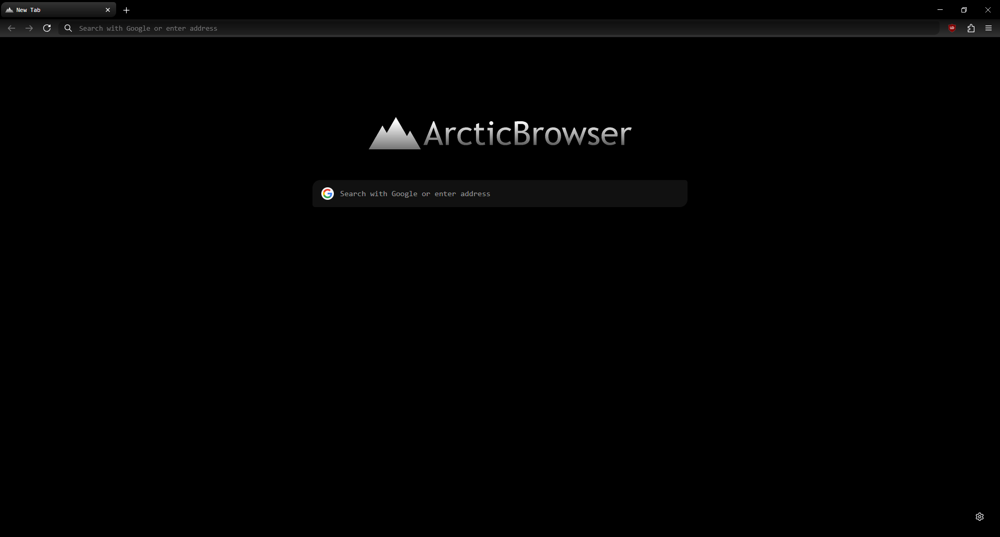

The most funny Firefox mod ever. [totally not wrong]
ArcticBrowser is an custom theme for Firefox. just like any other Firefox theme, but based on a funny Robloc game called "The Arctic".

ArcticBrowser is an custom theme for Firefox. just like any other Firefox theme, but based on a funny Robloc game called "The Arctic".